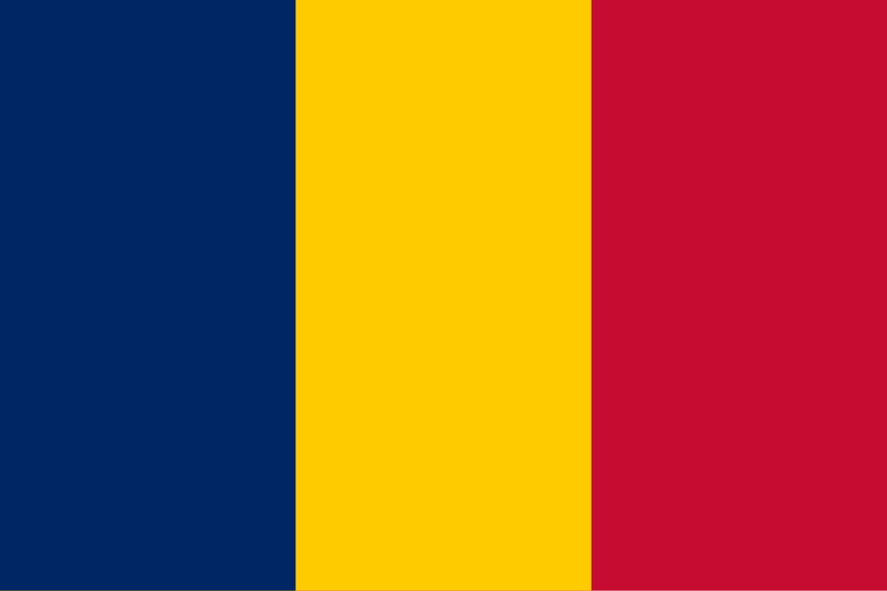

Chade
 O Chade, oficialmente República do Chade, é um país situado na região central da África, sem saída para o mar, limitado pela Líbia ao norte, Sudão a leste, República Centro-Africana ao sul, Camarões e Nigéria a sudoeste, e Níger a oeste. Com cerca de 1,284 milhão de km², é o quinto maior país do continente africano em extensão territorial. Apesar de seu tamanho, o Chade possui uma população de aproximadamente 18 milhões de habitantes, distribuída de forma desigual devido às diferenças climáticas e geográficas. Grande parte da população vive no sul, onde há mais terras férteis e recursos hídricos, enquanto o norte é dominado pelo deserto do Saara. A capital é N'Djamena, que também é a maior cidade e o centro político, econômico e cultural do país. O francês e o árabe são as línguas oficiais, mas mais de 120 línguas locais também são faladas, refletindo a diversidade étnica e cultural da nação.
História
A história do Chade é marcada pela presença de antigos reinos e impérios africanos que floresceram na região do Sahel. Entre os mais notáveis estão o Império de Kanem-Bornu, que prosperou entre os séculos IX e XIX, desempenhando papel central no comércio transaariano de sal, ouro e escravos. Esses reinos foram influenciados pelo islamismo, introduzido a partir do século XI, que se tornou a religião dominante no norte do país. Durante o período pré-colonial, o território também foi alvo de conflitos e disputas entre grupos locais, além de expedições escravistas vindas de regiões vizinhas.
No final do século XIX, o Chade foi incorporado ao império colonial francês, tornando-se parte da África Equatorial Francesa em 1910. A colonização trouxe mudanças profundas, mas também resistência, especialmente nas regiões do norte e leste. O país conquistou sua independência em 1960, com François Tombalbaye como primeiro presidente. No entanto, a história pós-independência foi marcada por instabilidade política, guerras civis e golpes de Estado, geralmente motivados por divisões regionais, étnicas e religiosas entre o norte, majoritariamente muçulmano, e o sul, de maioria cristã e animista. Na década de 1980, Hissène Habré chegou ao poder e governou de forma autoritária, sendo posteriormente acusado de crimes contra a humanidade. Desde 1990, Idriss Déby governou o país por três décadas até sua morte em 2021, quando seu filho, Mahamat Déby, assumiu o comando, instaurando um governo de transição. Ainda hoje, o Chade enfrenta desafios de estabilidade política, segurança e desenvolvimento.
Cultura
A cultura do Chade é extremamente diversa, resultado da convivência de mais de 200 grupos étnicos que preservam línguas, tradições e modos de vida distintos. Essa diversidade é refletida nas práticas culturais, nas festividades e na vida cotidiana da população. O islamismo é predominante no norte e centro do país, enquanto o cristianismo e as religiões tradicionais africanas são mais comuns no sul. Essa pluralidade religiosa molda o calendário festivo e as práticas sociais, desde celebrações islâmicas, como o Ramadã, até festas cristãs e rituais tradicionais de comunidades locais.
A música e a dança são expressões fundamentais da identidade cultural do país. Ritmos africanos, instrumentos de percussão e cânticos tradicionais se misturam com influências modernas. A literatura chadiana também vem ganhando reconhecimento, abordando temas como identidade nacional, colonialismo, desigualdade e luta por liberdade. A culinária é simples, mas variada, influenciada pela disponibilidade de recursos naturais: no sul, pratos à base de milho, mandioca e legumes são comuns, enquanto no norte predominam preparos com carne de camelo, leite e cereais como o sorgo e o milhete. O artesanato, especialmente tecidos, cerâmicas e trabalhos em couro, também é parte importante da vida cultural, servindo tanto para o uso cotidiano quanto para o comércio.


Clima
O clima do Chade varia bastante de acordo com a região, indo do desértico ao tropical. No norte, o deserto do Saara domina a paisagem, com temperaturas extremamente altas durante o dia e muito baixas à noite, além de raríssimas chuvas. O centro do país possui clima semiárido, caracterizado por savanas secas e chuvas sazonais que ocorrem entre junho e setembro. Já o sul apresenta clima tropical úmido, com maior volume de chuvas, vegetação mais densa e condições favoráveis à agricultura. Essa transição climática faz do Chade um país de contrastes, que vai do deserto árido às terras férteis do sul.
O Lago Chade, localizado no oeste do país, já foi um dos maiores lagos da África, mas vem diminuindo drasticamente de tamanho nas últimas décadas devido à seca, ao aumento do uso da água e às mudanças climáticas. Esse fenômeno representa uma séria ameaça à segurança alimentar e ao modo de vida de milhões de pessoas que dependem do lago para agricultura, pesca e abastecimento de água. O avanço da desertificação no norte e a variabilidade climática geral tornam a gestão ambiental um dos maiores desafios do país.
Biodiversidade
Apesar dos desafios climáticos, o Chade abriga uma biodiversidade significativa, especialmente em suas regiões de savana e áreas protegidas. O país possui parques nacionais e reservas que protegem espécies emblemáticas da fauna africana, como elefantes, girafas, leões, guepardos, hipopótamos e crocodilos. Entre os mais importantes está o Parque Nacional de Zakouma, considerado um dos mais bem preservados do Sahel e um refúgio para grandes manadas de elefantes e diversas espécies de aves migratórias. Outras áreas de conservação incluem o Parque Nacional de Manda e a Reserva de Fauna de Ouadi Rimé-Ouadi Achim, voltada para a preservação de espécies em risco.
A flora também é variada: no sul, predominam savanas arborizadas e áreas de floresta, enquanto no norte, a vegetação é escassa, limitada a plantas resistentes à seca. Entretanto, a biodiversidade chadiana está sob pressão devido à caça ilegal, ao avanço da desertificação, à exploração de recursos e à expansão agrícola. Projetos de ecoturismo e iniciativas internacionais de preservação têm buscado equilibrar a proteção ambiental com o desenvolvimento econômico, destacando o papel do Chade como guardião de importantes ecossistemas africanos.


Cidades
O Chade possui algumas cidades importantes que refletem a diversidade e os contrastes do país. A capital, N'Djamena, localizada às margens do rio Chari, é o centro político, econômico e cultural. É uma cidade em crescimento, com mercados movimentados, instituições governamentais e universidades, além de ser um polo comercial importante devido à proximidade com a Nigéria e Camarões. Apesar das dificuldades de infraestrutura, N'Djamena é a principal ligação do país com o mundo exterior.
Outra cidade relevante é Moundou, localizada no sul, que é o centro industrial e agrícola do país, especialmente na produção de algodão e cerveja. Abéché, no leste, é um antigo centro histórico do comércio transaariano e hoje continua sendo uma cidade estratégica, próxima à região do Sudão e do conflito de Darfur. Sarh, também no sul, é um polo agrícola e cultural. No entanto, as duas maiores cidades do Chade são N'Djamena e Moundou, que concentram grande parte da população urbana e desempenham papéis centrais na vida nacional.